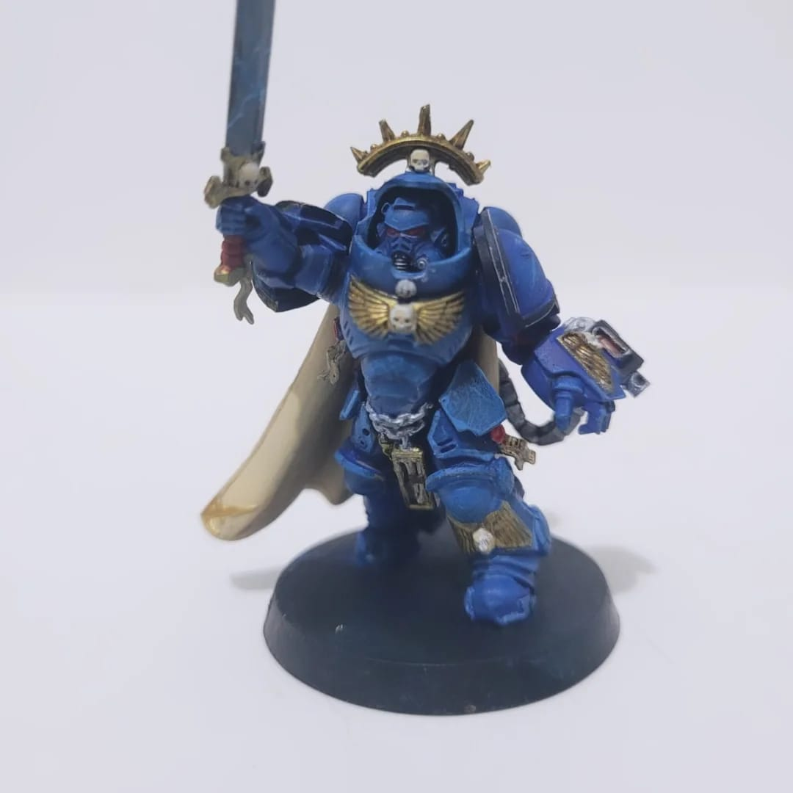
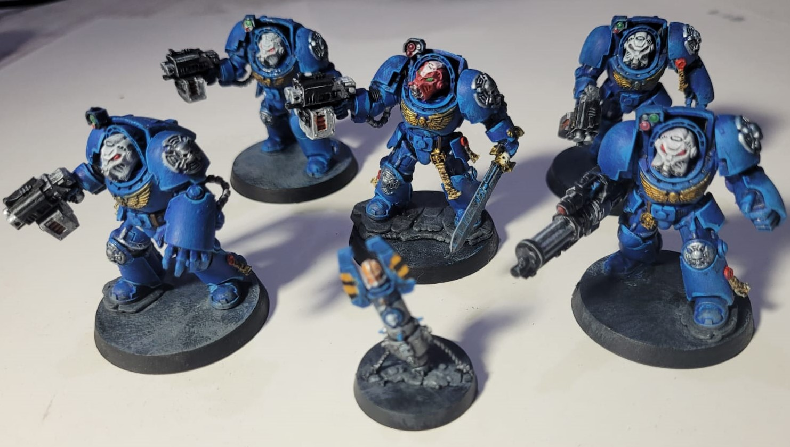
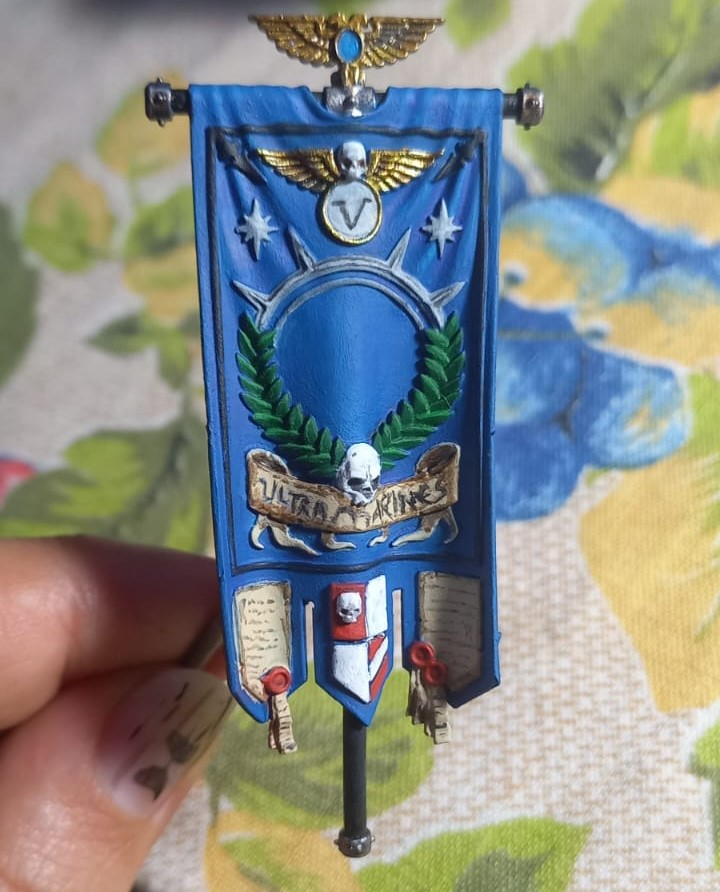
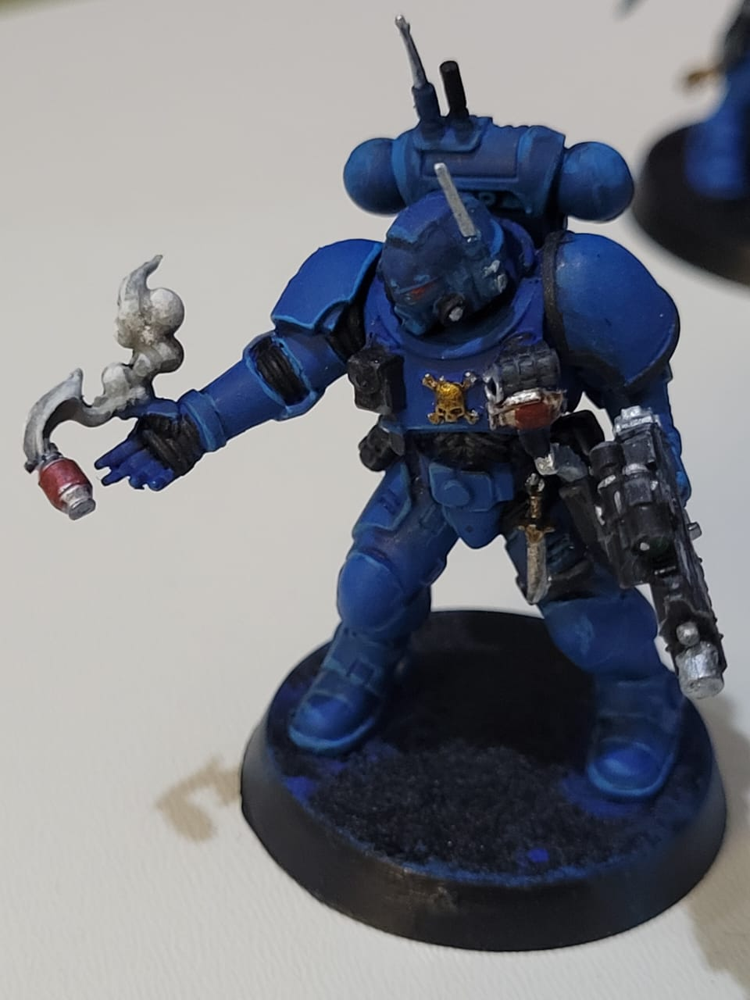
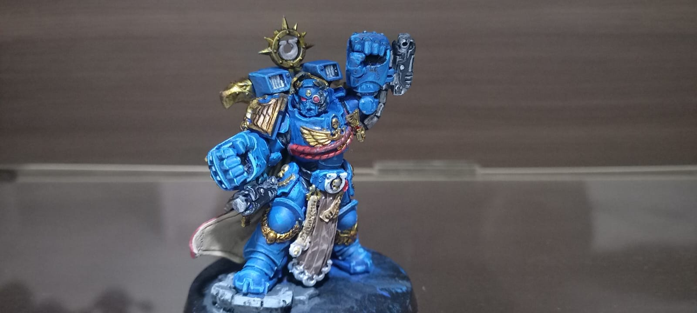
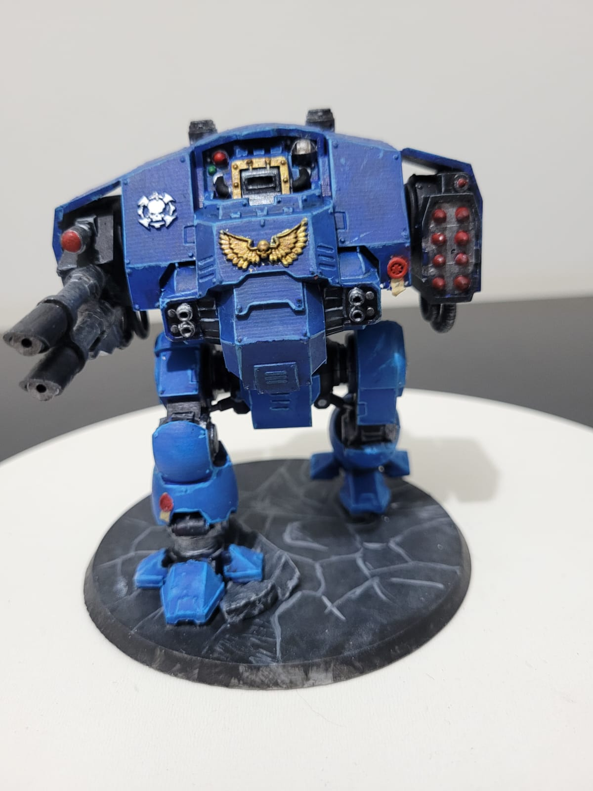

O Hobby de Pintar Miniaturas
Pintar miniaturas é mais do que um passatempo: é uma forma de arte que combina técnica, paciência e criatividade. Para muitos pode ser apenas "pintar bonequinhos", mas pode se transformar em uma forma de expressão, terapia ou carreira. Desde peças simples, até cenários, exércitos ou monstros, cada miniatura conta uma história, seja de seu universo ou de quem está dando vida ao trabalho..
Sobre o Bolters & Paints
Sou uma iniciante no universo da pintura, e neste site eu reservo um espaço para falar um pouco sobre o hooby de pintura de miniaturas para jogos de mesa. Aqui compartilho experiências, inspirações e imagens dos meus projetos favoritos.
Galeria de Miniaturas





